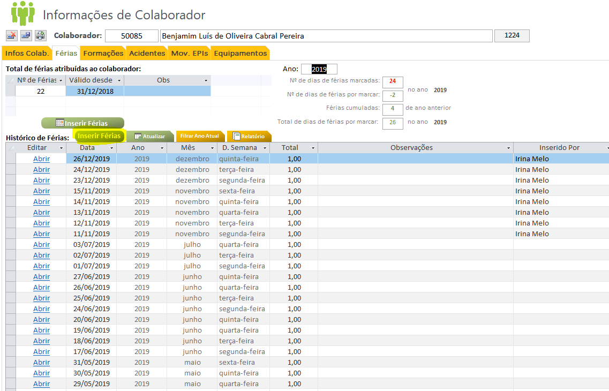
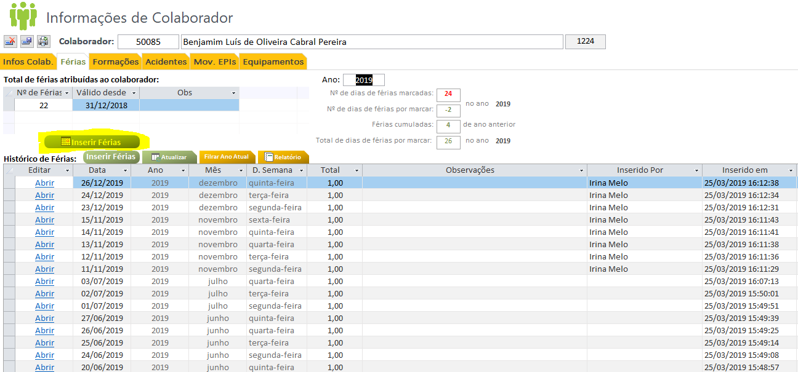
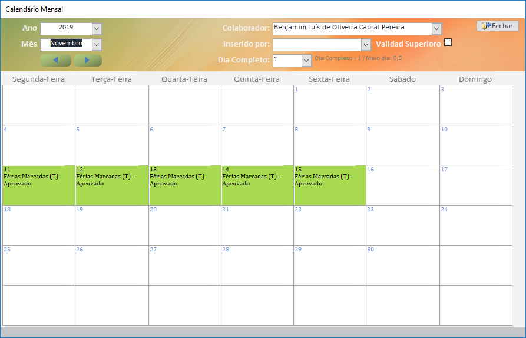
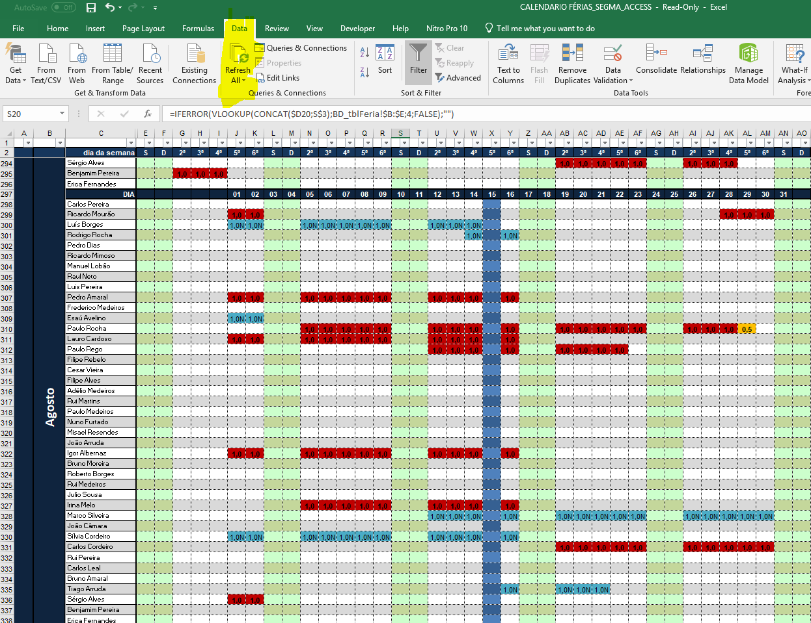
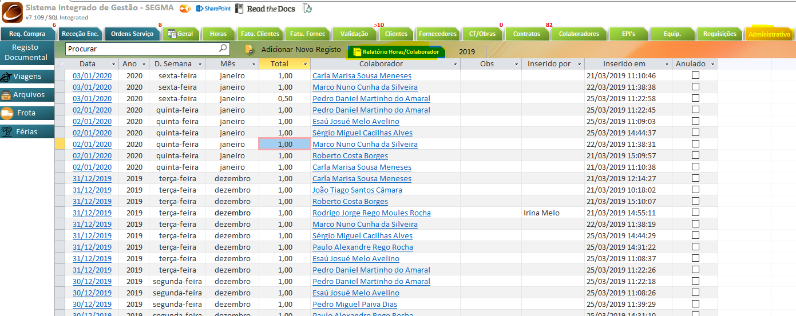

7. Gestão de Férias¶
Esta secção pretende documentar o processo da gestão de férias.
7.1. Workflow Gestão Férias¶
O registo e autorização de férias, deverá seguir o seguinte workflow procedimental, sendo registado através da base de dados.
«em desenvolvimento…»
Nota
Todas as férias incialmente introduzidas, por defeito, estão por validar pelo respetivo superior. Caso o superior já tenha validado as férias (folha assinada), deverá ser selecionado o campo Validado superior na respetiva data.
7.2. Registo Férias¶
A seguinte secção pretende documentar o registo de férias na base de dados, existindo duas opções, através do painel do Colaborador ou através do painel administrativo.
7.2.1. Registo diário¶
Para o registo de férias através do painel do Colaborador, deverá aceder ao separador Colaboradores na base de dados de suporte, selecionar o colaborador e clicar no separador Férias:

De seguida poderá começar imediatamente o registo de férias, ou através da tabela (última linha) ou clicando em Inserir Férias:
7.2.2. Registo Calendarizado¶
Uma outra alternativa ao registo de férias é através da visão calendarizada mensalmente. Para tal, deverá clicar em Inserir Férias com o icon de Calendário.
Irá surgir uma janela com o mês selecionado, sendo possível através deste formulário inserir férias apenas com um clique no dia escolhido:
Nota
É possível a visualização e edição do registo de férias diretamente através desta interface, apenas sendo necessário clicar no dia escolhido.
Nota
Deverá ser preenchido o campo Inserido Por, pela pessoa responsável pelo registo na base de dados de Suporte.
7.2.3. Listagem Geral¶
É possível também inserir férias através do painel Administrativo, sendo que o registo é identifco ao documentado no ponto 7.2.1.
7.3. Relatórios de Férias Marcadas¶
Para a exportação/visualização de férias por Colaborador é possível extrair um relatório através da base de dados (painel Administrativo) ou através do Excel automatizado de férias.
7.3.1. Excel Calendarizado¶
Através deste Excel é possível visualizar todas as férias marcadas, conforme os registos na Base de Dados.
Local do ficheiro:
>>\smgctpdfsareassegmaSEGMA - TÉCNICA3 - RECURSOS HUMANOS111 - 20191 - MAPA DE FÉRIAS
Importante
É fundamental atualizar os dados aquando da abertura do ficheiro.
Nota
As cores identificadas no excel têm a seguinte representação:
- Vermelho: Dia completo marcado Validado Superiormente);
- Amarelo: Dia parcial marcado Validado Superiormente);
- Azul: Dia por validar superiormente;
7.3.2. Relatórios Mapa de Férias¶
Para retirar a folha de registo de férias, por Colaborador, deverá clicar no painel Administrativo - > Férias e selecionar Relatórios Férias/Colaborador, este será o mapa de férias.
Nota
Deverá selecionar o ano antes da extração do mapa de férias.
Após selecionado o ano 2019 é gerado o seguinte mapa de férias:
É possível imprimir este documento.